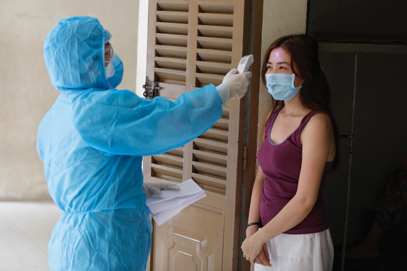

TP HCM thí điểm cách ly F1 tại nhà theo 'công thức 14-14
TP HCM sẽ thực hiện linh hoạt việc thí điểm cách ly F1 tại nhà theo "công thức 14-14" (14 ngày cách ly tập trung, 14 ngày tại nhà) theo hướng dẫn Bộ Y tế. Thông tin được Chủ tịch UBND TP HCM Nguyễn Thành Phong nói tại buổi làm việc trực tuyến của Chính phủ với 8 tỉnh, thành phía Nam ngày 4/7, về phương án phòng chống dịch trong thời gian tới. Trước đây, Việt Nam thực hiện cách ly F1 (tiếp xúc gần ca nhiễm) trong 14 ngày nhưng sau đó nâng lên 21 ngày. Hiện, TP HCM có 14.392 người cách ly tập trung, 36.305 trường hợp cách ly tại nhà, nơi lưu trú. Việc cách ly F1 tại nhà được xem giúp giảm tải cho các khu cách ly tập trung tại TP HCM. Bởi cùng số ca bệnh tăng (hơn 6.000 ca tính đến ngày 4/7), số ca F1 cũng tăng liên tục khiến các khu cách ly ở thành phố quá tải.
Chủ tịch UBND thành phố Nguyễn Thành Phong phát biểu tại cuộc họp. Ảnh: Trung tâm báo chí TP HCM.
Theo hướng dẫn của Bộ Y tế gửi TP HCM ngày 27/6, F1 ở TP HCM được cách ly tại nhà 28 ngày nếu đảm bảo phòng riêng, khép kín, tách biệt khu sinh hoạt chung gia đình. Người cách ly không ra khỏi phòng; không tiếp xúc người trong gia đình và vật nuôi. F1 luôn cài đặt và bật ứng dụng khai báo y tế hàng ngày như VHD (Vietnam Health Declaration), Bluzone; tự đo thân nhiệt, theo dõi sức khỏe để cập nhật... Tại cuộc họp, Chủ tịch UBND thành phố Nguyễn Thành Phong cho biết, từ khi áp dụng Chỉ thị 10, chủ tịch quận, huyện được giao toàn quyền quyết định các vấn đề tại khu vực, nâng cao hệ thống chính trị tại cơ sở, phát huy vai trò của tổ Covid-19 cộng đồng. Theo ông Phong, việc trả kết quả xét nghiệm chậm có xảy ra nhưng chỉ cá biệt. Nhằm đẩy mạnh năng lực xét nghiệm, thành phố triển khai thành lập Trung tâm điều phối và xét nghiệm Covid-19, chỉ đạo lập các tổ xét nghiệm tại các quận huyện; đàm phán mua 1,4 triệu test nhanh kháng nguyên; tập trung khắc phục hạn chế về tổ chức, năng lực và đội ngũ xét nghiệm. Để đảm bảo duy trì sản xuất, thành phố tổ chức cho 43 doanh nghiệp tại khu chế xuất, khu công nghệ cao vừa sản xuất vừa cách ly tại chỗ theo ý kiến chỉ đạo của Thủ tướng. Đồng thời, thành lập 100 tổ kiểm tra hướng dẫn an toàn phòng chống dịch tại các điểm trên, đẩy mạnh lấy mẫu test nhanh tại doanh nghiệp.

Nhân viên y tế kiểm tra sức khoẻ người cách ly tại ký túc xá Đại học Quốc gia TP HCM. Ảnh: Hữu Khoa.
Trước đó, Bộ trưởng Y tế Nguyễn Thanh Long chỉ ra 2 nguyên nhân khách quan khiến số ca mắc tại thành phố ngày càng tăng. Đó là biến chủng virus Delta tốc độ và khả năng lây lan mạnh; mật độ dân cư tại thành phố đông đúc, tạo điều kiện thuận lợi cho dịch bệnh xâm nhập nhanh. Về nguyên nhân chủ quan, theo Bộ trưởng Y tế, một số quận huyện, phường xã tại TP HCM vẫn chưa thực hiện nghiêm Chỉ thị 10; chưa phát huy hết sức mạnh của hệ thống chính trị ở cơ sở. Việc thực hiện tổ cộng đồng, tổ an toàn Covid-19, phương châm 4 tại chỗ còn hạn chế... Bên cạnh đó, thành phố còn gặp khó khăn trong thực hiện chiến lược xét nghiệm tầm soát diện rộng. Trung tâm kiểm soát Bệnh tật thành phố bị quá tải; thời gian trả kết quả xét nghiệm chậm. Việc điều phối xét nghiệm giữa các đơn vị chưa tốt; công tác cách ly chưa thật sự nghiêm ngặt và linh hoạt. Phương án chống dịch tại nhà máy, khu công nghiệp chưa thực sự đi vào thực hiện. Lãnh đạo Bộ Y tế đề nghị thời gian tới, TP HCM cần tiếp tục thực hiện nghiêm Chỉ thị 10, mở rộng một số khu vực, địa bàn thực hiện giãn cách xã hội theo Chỉ thị 16. Bên cạnh đó, thành phố thực hiện nghiêm phong toả, tăng cường truyền thông, kêu gọi người dân hạn chế ra khỏi nhà nếu không cần thiết...